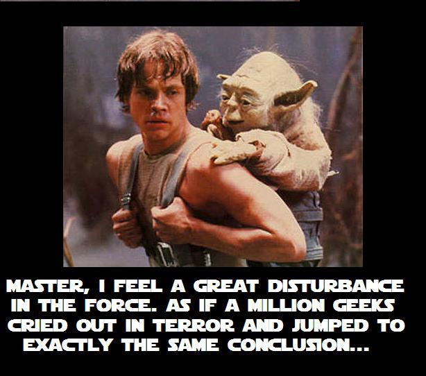
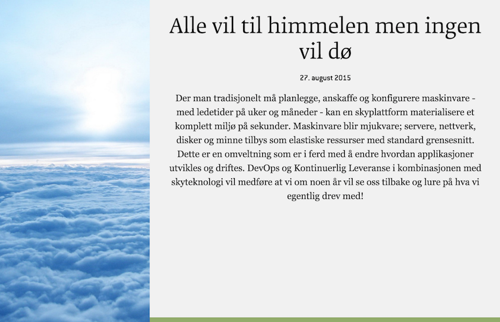

5. mai 2013 annonserte regeringen i Storbritania at Sky skal være førstevalget ved investeringer i IT-produkter og tjenester.
Det samme gjelder for det offentlige i USA.
De skriver....
The Cloud First policy mandates that agencies take full advantage of cloud computing benefits to maximize capacity utilization, improve IT flexibility and responsiveness, and minimize cost.

http://www.realworldnewmedia.com/1-million-geeks-cry-out-in-pain-disney-buys-lucasfilm/
Det må da være et marked!?!?!!!
Kan sky-drift demme opp for outsourcing?
Kan det være bedre enn outsourcing?
Sky ≠ virtualisering
Noen norske aktører sier de tilbyr sky og at de har gjort det lenge
Men å virtualisere ressurser med for eksempel VMware eller OpenStack er ikke sky.
Sky handler ikke først og fremst om virtualisering
The primary value of cloud http://www.cloudscaling.com/blog/cloud-computing/cloud-youre-doing-it-wrong/
Sky handler ikke først og fremst om reduserte kostnader.
Det handler om å ikke bli utkonkurert.
Det handler om å være "future proof".
Sky er i ferd med å bli industristandard, så om du ikke kommer i gang så er det værst for deg..
Cost savings is a side effect http://www.cloudscaling.com/blog/cloud-computing/cloud-youre-doing-it-wrong/

Vår eminente CTO har skrevet en fantastisk bra Bloggpost om Sky-fremtiden på Bekk Open - obligatorisk lesestoff
Han peker på 7 viktige aspekter ved Sky-drift
1. Fra få statiske miljøer til mange dynamiske miljøer
Produksjonslike miljøer on-demand
Ingen bestillingstid
Ingen forskjeller mellom test og prod
Opprett nye miljøer når du vil og drep de når du vil
2. Fra koordinering av delte miljøer
Miljøene er isolerte og dedikerte
Det er ikke lenger ressursknapphet og man trenger ikke å vurdere ulike behov opp mot hverandre
Alle som vil kan ytelsesteste og integrasjonsteste når de vil
De ulike miljøene påvirker ikke hverandre
3. Fra fikling i prod til immutable infrastructure
Med immutable infrastructure er du garantert at infrastrukturen vil fungere i alle miljøer
Det er INGEN forskjeller mellom utvikling, test, qa eller produksjon
Samme infrastruktur flyter gjennom alle miljøer uten manuell intervensjon
4. Fra bestilling til selvbetjening
Ingen bestillingstid
Trykk på knappen og du har et miljø
5. Fra forhåndsbetaling til forbruksbetaling
I skyen betaler man for faktisk bruk
Du trenger ikke investere på forhånd og dermed måtte gjette hvor mye ressurser du trenger
Infrastruktur blir driftskostnader i steden for investeringskostnader
Ressursbruk blir prioritert ut fra kost nytte
6. Fra planlegging til elastisitet
Du trenger ikke gjette på kapasitetsbehov lenge før du trenger det
Du slipper å forholde deg til bestillingstider
Du kan skalere ved behov
7. Fra variasjon mellom miljøer
Klon prodmiljøet når du vil
Det koster nesten ingenting.
Sky ♥ DevOps
Alle disse tingene vi har snakket om handler om å bruke sky riktig
Vi kan ikke overlate det til sirompa tradisjonelle driftsleverandører å definere og levere cloud
Sky er ikke virualisering!
Sky er virtualisering og DevOps
Cost savings is a side effect http://www.cloudscaling.com/blog/cloud-computing/cloud-youre-doing-it-wrong/
Det holder ikke å bare peke på reduserte kostnader når man skal selge sky
The primary value of cloud http://www.cloudscaling.com/blog/cloud-computing/cloud-youre-doing-it-wrong/
Det er mange andre ting som norske kunder vil være opptatt av når de skal vurdere sky
Leveransekraft
Forutsigbarhet
Tilgjengelighet
Stabilitet
Datasikkerhet
Og ikke minst! Å ikke bli utkonkurert eller avlegs.
Kunder ♥ BekkOps
Det er disse tingene vi må formidle til våre kunder
Vi må få de til å ha sky som førstevalg
Men da må vi kunne besvare alle innvendinger de måtte ha
Og DevOps er nøkkelen til kundenes hjerter
Det er når de erfarer alle disse fordelene at de er solgt.